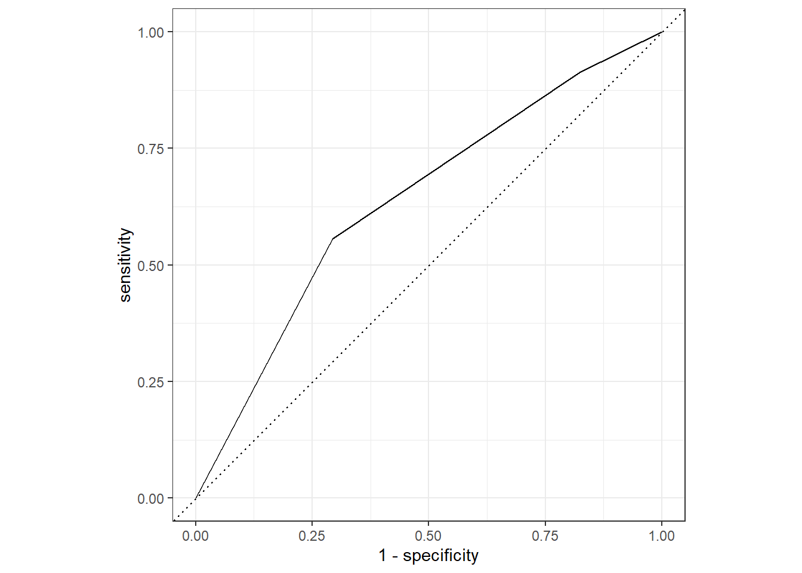

library(here)
library(tidyverse)
library(tidymodels)Model Evaluation
flu <- readRDS(here("fluanalysis/data/processed_data/flu.rds"))# setting the seed
set.seed(222)
# Put 3/4 of the data into the training set
data_split <- initial_split(flu, prop = 3/4)
# Create data frames for the two sets:
train_data <- training(data_split)
test_data <- testing(data_split)n_flu <-
recipe(Nausea ~ ., data = train_data) Setting logistic regression engine
lr_mod <-
logistic_reg() %>%
set_engine("glm")Creating workflow function using logistic regression model and training data
flu_wflow <-
workflow() %>%
add_model(lr_mod) %>%
add_recipe(n_flu)Creating function that can be used to prepare the recipe and train the model
flu_fit <-
flu_wflow %>%
fit(data = train_data)Extracting the model objects from the workflow
flu_fit %>%
extract_fit_parsnip() %>%
tidy()# A tibble: 38 × 5
term estimate std.error statistic p.value
<chr> <dbl> <dbl> <dbl> <dbl>
1 (Intercept) 1.63 9.40 0.173 0.862
2 SwollenLymphNodesYes -0.241 0.232 -1.04 0.298
3 ChestCongestionYes 0.219 0.257 0.853 0.394
4 ChillsSweatsYes 0.115 0.332 0.346 0.729
5 NasalCongestionYes 0.560 0.311 1.80 0.0713
6 CoughYNYes -0.705 0.611 -1.15 0.249
7 SneezeYes 0.117 0.248 0.473 0.636
8 FatigueYes 0.177 0.438 0.403 0.687
9 SubjectiveFeverYes 0.229 0.264 0.868 0.385
10 HeadacheYes 0.435 0.352 1.24 0.216
# … with 28 more rowsUsing trained workflow to make predictions on testing data
predict(flu_fit, test_data)Warning in predict.lm(object, newdata, se.fit, scale = 1, type = if (type == :
prediction from a rank-deficient fit may be misleading# A tibble: 183 × 1
.pred_class
<fct>
1 No
2 No
3 No
4 No
5 No
6 Yes
7 Yes
8 No
9 No
10 Yes
# … with 173 more rowsflu_aug <-
augment(flu_fit, test_data)Warning in predict.lm(object, newdata, se.fit, scale = 1, type = if (type == :
prediction from a rank-deficient fit may be misleading
Warning in predict.lm(object, newdata, se.fit, scale = 1, type = if (type == :
prediction from a rank-deficient fit may be misleading# The data look like:
flu_aug %>%
select(Nausea, .pred_No, .pred_Yes)# A tibble: 183 × 3
Nausea .pred_No .pred_Yes
<fct> <dbl> <dbl>
1 No 0.962 0.0377
2 Yes 0.717 0.283
3 No 0.680 0.320
4 Yes 0.558 0.442
5 No 0.830 0.170
6 Yes 0.188 0.812
7 Yes 0.254 0.746
8 No 0.725 0.275
9 No 0.720 0.280
10 Yes 0.281 0.719
# … with 173 more rowsPlotting ROC_AUC
flu_aug %>%
roc_curve(truth = Nausea, .pred_No) %>%
autoplot()Warning: Returning more (or less) than 1 row per `summarise()` group was deprecated in
dplyr 1.1.0.
ℹ Please use `reframe()` instead.
ℹ When switching from `summarise()` to `reframe()`, remember that `reframe()`
always returns an ungrouped data frame and adjust accordingly.
ℹ The deprecated feature was likely used in the yardstick package.
Please report the issue at <https://github.com/tidymodels/yardstick/issues>.
flu_aug %>%
roc_auc(truth = Nausea, .pred_No) # A tibble: 1 × 3
.metric .estimator .estimate
<chr> <chr> <dbl>
1 roc_auc binary 0.724Alternative model
flu_r <-
recipe(Nausea ~ RunnyNose, data = train_data) Creating workflow function using lr model function and training data
flu_wflow_r <-
workflow() %>%
add_model(lr_mod) %>%
add_recipe(flu_r)Creating function that can be used to prepare the recipe and train the model
flu_fit_r <-
flu_wflow_r %>%
fit(data = train_data)Extracting the model objects from the workflow
flu_fit_r %>%
extract_fit_parsnip() %>%
tidy()# A tibble: 2 × 5
term estimate std.error statistic p.value
<chr> <dbl> <dbl> <dbl> <dbl>
1 (Intercept) -0.790 0.172 -4.59 0.00000447
2 RunnyNoseYes 0.188 0.202 0.930 0.352 Using trained workflow to make predictions on testing data
predict(flu_fit_r, test_data)# A tibble: 183 × 1
.pred_class
<fct>
1 No
2 No
3 No
4 No
5 No
6 No
7 No
8 No
9 No
10 No
# … with 173 more rowsflu_aug_r <-
augment(flu_fit_r, test_data)
# The data look like:
flu_aug_r %>%
select(Nausea, .pred_No, .pred_Yes)# A tibble: 183 × 3
Nausea .pred_No .pred_Yes
<fct> <dbl> <dbl>
1 No 0.688 0.312
2 Yes 0.646 0.354
3 No 0.646 0.354
4 Yes 0.646 0.354
5 No 0.688 0.312
6 Yes 0.688 0.312
7 Yes 0.646 0.354
8 No 0.688 0.312
9 No 0.688 0.312
10 Yes 0.688 0.312
# … with 173 more rowsPlotting ROC_AUC
flu_aug_r %>%
roc_curve(truth = Nausea, .pred_No) %>%
autoplot()
flu_aug_r %>%
roc_auc(truth = Nausea, .pred_No) # A tibble: 1 × 3
.metric .estimator .estimate
<chr> <chr> <dbl>
1 roc_auc binary 0.466The model using only runny nose as a predictor for nausea performed much more poorly than the full model
This section added by KATIE WELLS
Model Evaluation Part 2
BodyTemp with all predictors
# setting the seed
set.seed(333)
# Put 3/4 of the data into the training set
data_split2 <- initial_split(flu, prop = 3/4)
# Create data frames for the two sets:
train_data2 <- training(data_split2)
test_data2 <- testing(data_split2)Creating recipe
n_flu_bt <-
recipe(BodyTemp ~ ., data = train_data2) Setting engine
lr_mod2 <- linear_reg() %>%
set_engine("lm")Creating workflow function using linear regression model and training data
flu_wflow_bt <-
workflow() %>%
add_model(lr_mod2) %>%
add_recipe(n_flu_bt)
flu_wflow_bt══ Workflow ════════════════════════════════════════════════════════════════════
Preprocessor: Recipe
Model: linear_reg()
── Preprocessor ────────────────────────────────────────────────────────────────
0 Recipe Steps
── Model ───────────────────────────────────────────────────────────────────────
Linear Regression Model Specification (regression)
Computational engine: lm Creating function that can be used to prepare the recipe and train the model
flu_fit_bt <-
flu_wflow_bt %>%
fit(data = train_data2)Extracting the model objects from the workflow
flu_fit_bt %>%
extract_fit_parsnip() %>%
tidy()# A tibble: 38 × 5
term estimate std.error statistic p.value
<chr> <dbl> <dbl> <dbl> <dbl>
1 (Intercept) 97.8 0.339 289. 0
2 SwollenLymphNodesYes -0.267 0.103 -2.59 0.00996
3 ChestCongestionYes 0.111 0.110 1.01 0.313
4 ChillsSweatsYes 0.178 0.139 1.28 0.203
5 NasalCongestionYes -0.119 0.129 -0.923 0.356
6 CoughYNYes 0.331 0.296 1.12 0.264
7 SneezeYes -0.462 0.112 -4.14 0.0000400
8 FatigueYes 0.394 0.180 2.19 0.0287
9 SubjectiveFeverYes 0.399 0.116 3.45 0.000615
10 HeadacheYes -0.0632 0.144 -0.439 0.661
# … with 28 more rowsUsing trained workflow to make predictions on testing data
predict(flu_fit_bt, test_data2)Warning in predict.lm(object = object$fit, newdata = new_data, type =
"response"): prediction from a rank-deficient fit may be misleading# A tibble: 183 × 1
.pred
<dbl>
1 98.9
2 99.6
3 99.0
4 98.8
5 98.8
6 98.3
7 99.4
8 99.3
9 99.6
10 99.0
# … with 173 more rowsflu_aug_bt <-
augment(flu_fit_bt, test_data2)Warning in predict.lm(object = object$fit, newdata = new_data, type =
"response"): prediction from a rank-deficient fit may be misleading# The data look like:
flu_aug_bt %>%
select(BodyTemp, .pred)# A tibble: 183 × 2
BodyTemp .pred
<dbl> <dbl>
1 97.8 98.9
2 98.2 99.6
3 99 99.0
4 99.2 98.8
5 98.5 98.8
6 98.2 98.3
7 100. 99.4
8 97.8 99.3
9 99.5 99.6
10 99.7 99.0
# … with 173 more rowsRMSE
flu_aug_bt %>%
rmse(truth = BodyTemp, .pred) # A tibble: 1 × 3
.metric .estimator .estimate
<chr> <chr> <dbl>
1 rmse standard 1.27BodyTemp with main predictor RunnyNose
Creating recipe
n_flu_bt_rn <-
recipe(BodyTemp ~ RunnyNose, data = train_data2) Creating workflow function using linear model function and training data
flu_wflow_bt_rn <-
workflow() %>%
add_model(lr_mod2) %>%
add_recipe(n_flu_bt_rn)Creating function that can be used to prepare the recipe and train the model
flu_fit_bt_rn <-
flu_wflow_bt_rn %>%
fit(data = train_data2)Extracting the model objects from the workflow
flu_fit_bt_rn %>%
extract_fit_parsnip() %>%
tidy()# A tibble: 2 × 5
term estimate std.error statistic p.value
<chr> <dbl> <dbl> <dbl> <dbl>
1 (Intercept) 99.0 0.0913 1085. 0
2 RunnyNoseYes -0.188 0.109 -1.73 0.0846Using trained workflow to make predictions on testing data
predict(flu_fit_bt_rn, test_data2)# A tibble: 183 × 1
.pred
<dbl>
1 98.9
2 99.0
3 98.9
4 98.9
5 98.9
6 98.9
7 98.9
8 99.0
9 99.0
10 99.0
# … with 173 more rowsflu_aug_bt_rn <-
augment(flu_fit_bt_rn, test_data2)
# The data look like:
flu_aug_bt_rn %>%
select(BodyTemp, .pred)# A tibble: 183 × 2
BodyTemp .pred
<dbl> <dbl>
1 97.8 98.9
2 98.2 99.0
3 99 98.9
4 99.2 98.9
5 98.5 98.9
6 98.2 98.9
7 100. 98.9
8 97.8 99.0
9 99.5 99.0
10 99.7 99.0
# … with 173 more rowsRMSE
flu_aug_bt_rn %>%
rmse(truth = BodyTemp, .pred)# A tibble: 1 × 3
.metric .estimator .estimate
<chr> <chr> <dbl>
1 rmse standard 1.27The model with all predictors has a lower RMSE.